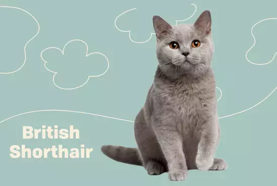
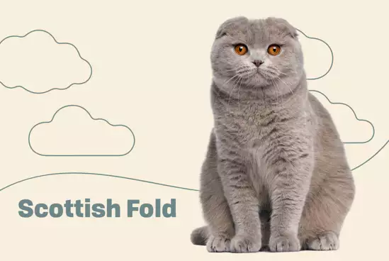
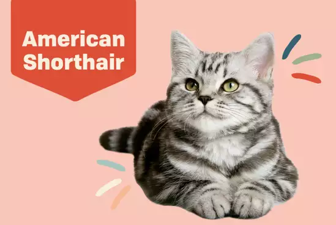

Cat Breeds
|
Image |
Name |
Description |
|  |
British Shorthair |
British shorthair cats are one of the oldest recognized cat breeds, first thought to have been brought to Britain by the Romans. Prized for their soft, plush coats and rounded bodies, British shorthairs could almost be mistaken for living teddy bears. |
|  |
Scottish Fold |
Scottish folds are rare felines, prized for their huggable good looks and sweet personalities. Sporting round heads with tight, forward-facing folded ears and large eyes, Scottish folds always draw a lot of attention. Scottish fold cats make great, affectionate pets that thrive on human interaction without being too demanding for your constant attention. They have a charmingly unique appearance due to their ear carriage, round heads and eyes, and thick legs and tail. |
|  |
American Shorthair |
The American shorthair cat has a short, dense coat and came to the U.S. aboard the Mayflower. With their affectionate nature, compact build, round faces, and short ears, American shorthairs make beautiful and loving pets.
|